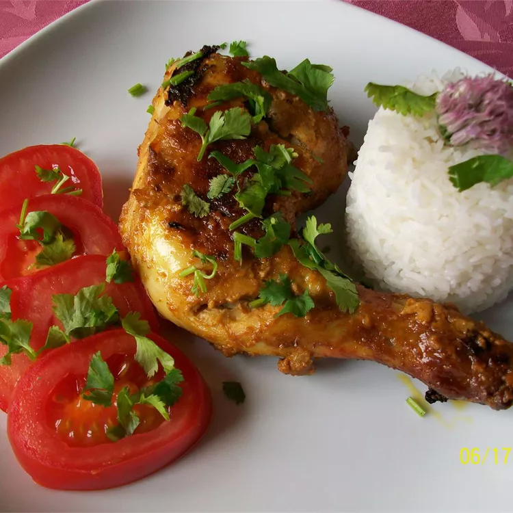

Tandoori Chicken

Description
Try this authentic tandoori chicken that's marinated in yogurt and spices, then cooked on the grill instead of a clay oven so you can make it at home.
Serve with long-grain basmati rice, grilled veggies, roasted corn on the cob, and a cucumber salad.
Ingredients
- 2 pounds chicken, cut into pieces
- 1 medium lemon, juiced
- 1 teaspoon salt
- 1 ¼ cups plain yogurt
- ½ medium onion, finely chopped
Steps
- Remove and discard skin from chicken pieces. Cut slits into meat and place into a shallow dish.
Season chicken on both sides with lemon juice and salt. Let sit for 20 minutes.
- Mix yogurt, onion, garlic, garam masala, ginger, and cayenne pepper together in a medium bowl until smooth, then stir in food coloring.
Spread yogurt mixture over chicken, cover, and refrigerate for 6 to 24 hours (the longer the better).
- When ready to cook, preheat an outdoor grill for medium-high heat and lightly oil the grate. Remove chicken from marinade.
Discard remaining marinade.
- Cook chicken on the preheated grill until no longer pink and the juices run clear.
An instant-read thermometer inserted near the bone should read 165 degrees F (74 degrees C). Garnish with cilantro and lemon wedges.
Return to main page